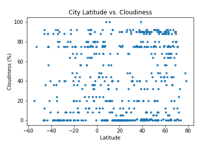
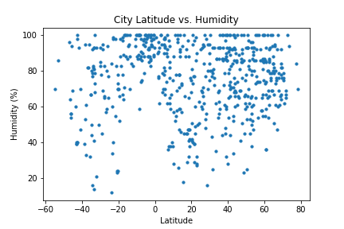
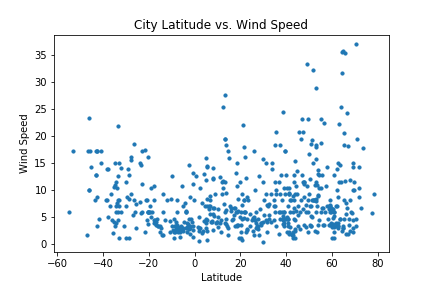
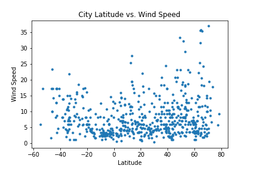

Max Temperature

From the plotted data, we note that temperature increases as we approach the equator. While this is not surprising, temperatures appear to peak at approximately 20 degrees latitude, which may be due to the tilt in the Earth's axis. Since Earth is round, not every place receives the same amount of sunlight, or heat.
Visualizations



